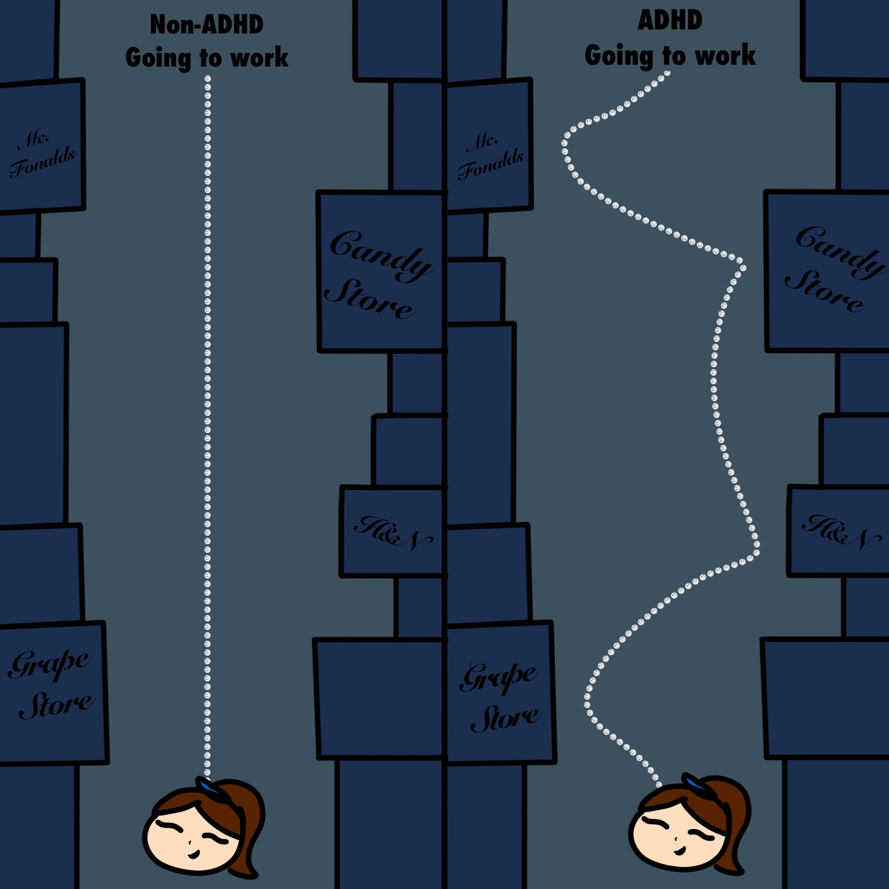
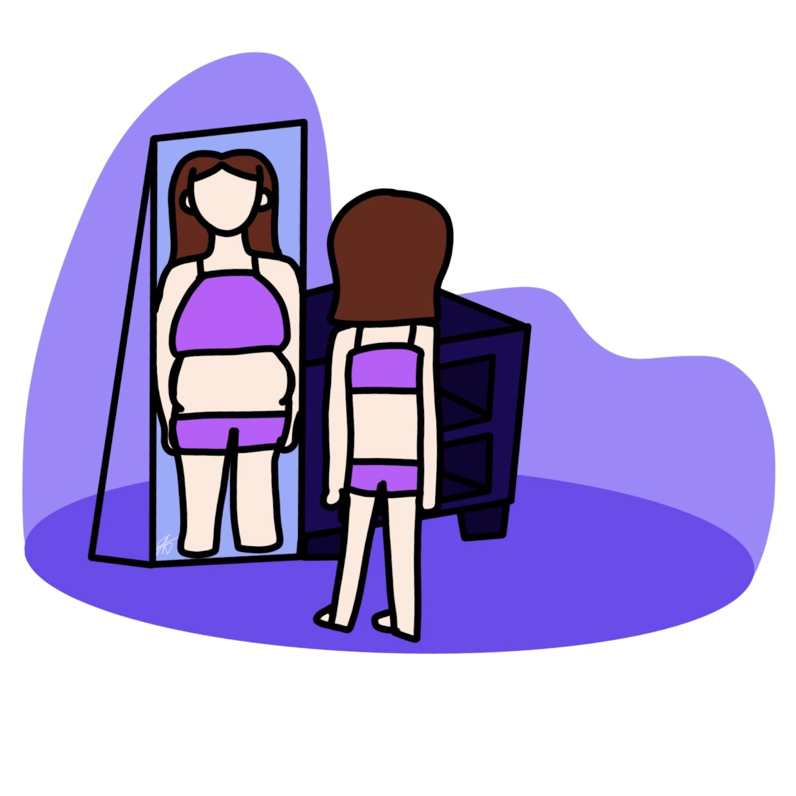
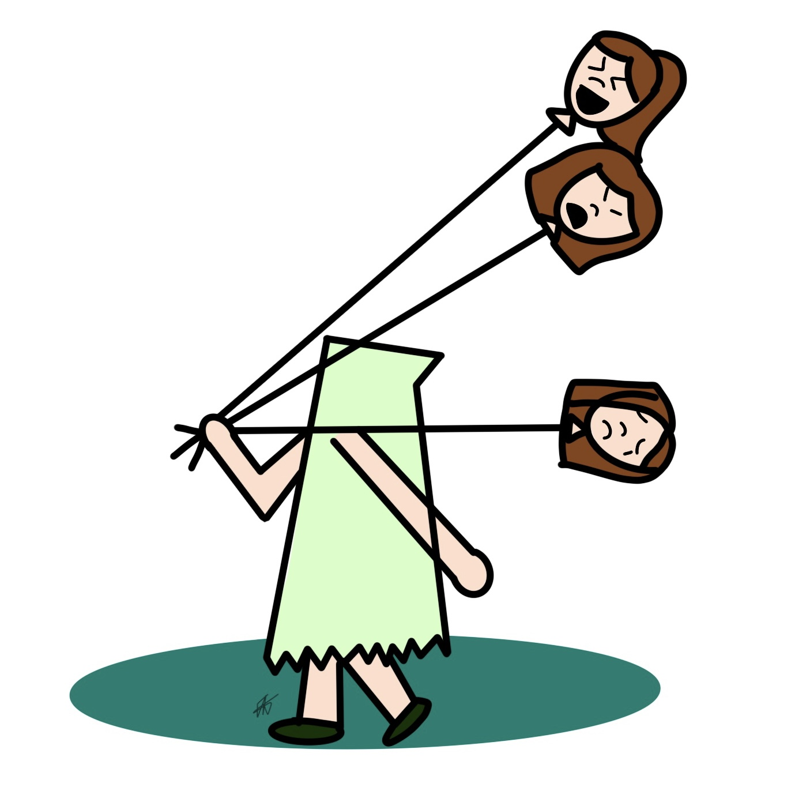
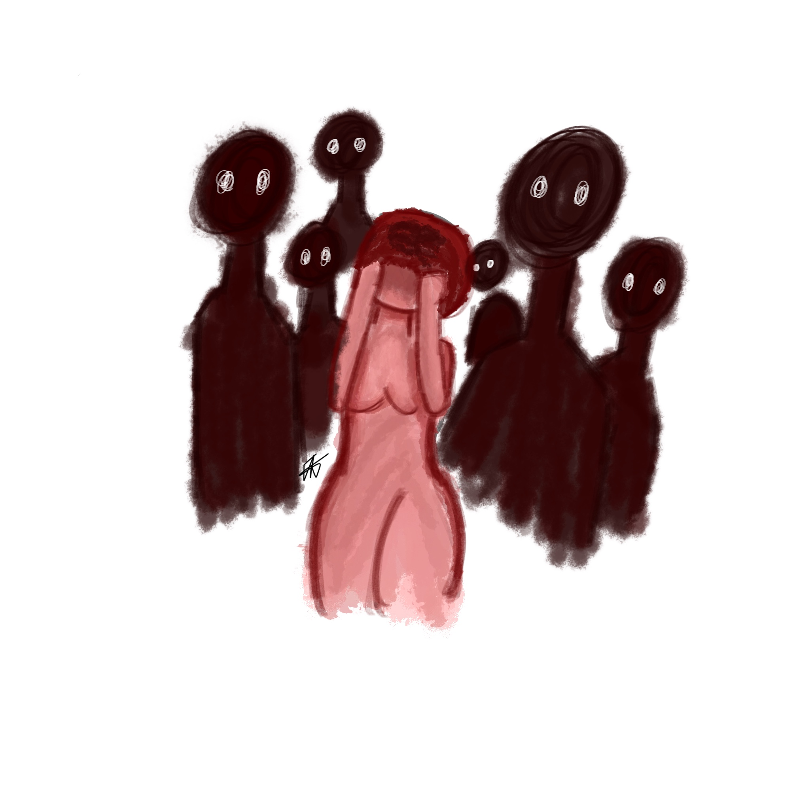
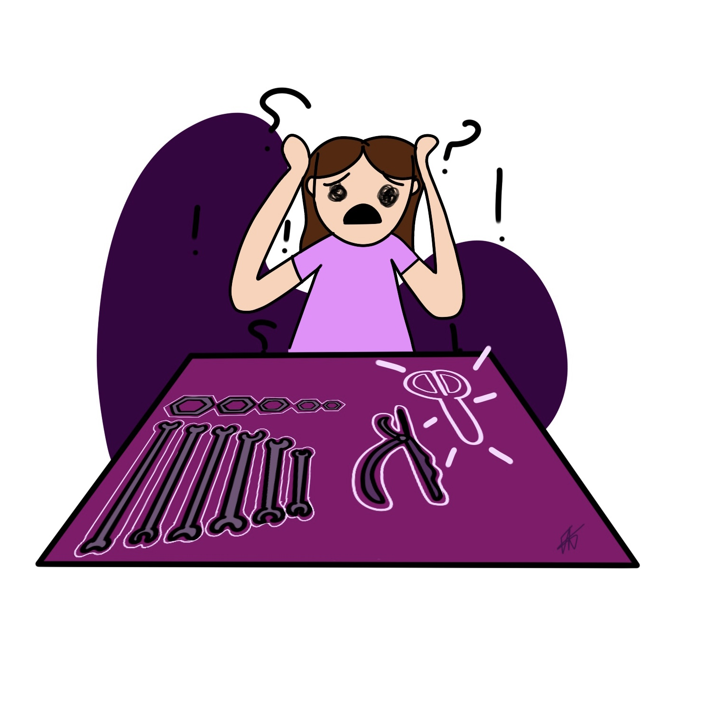
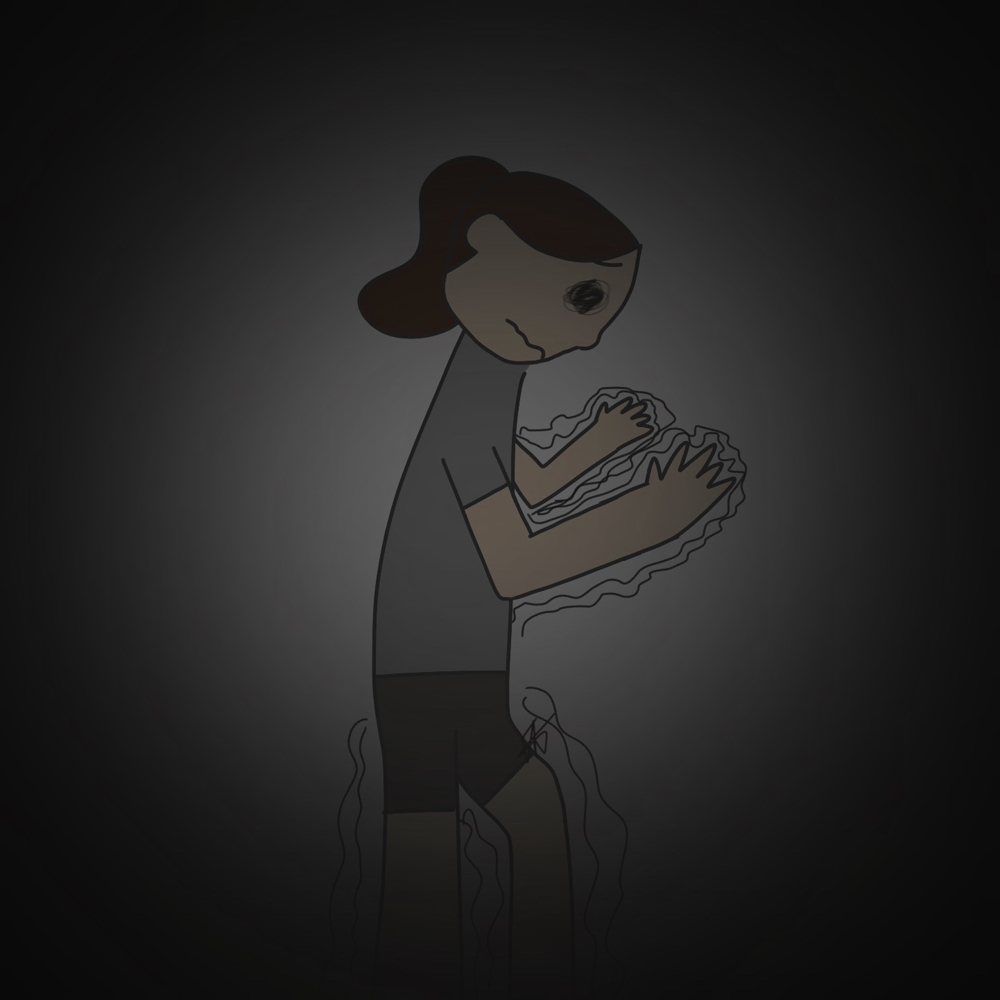
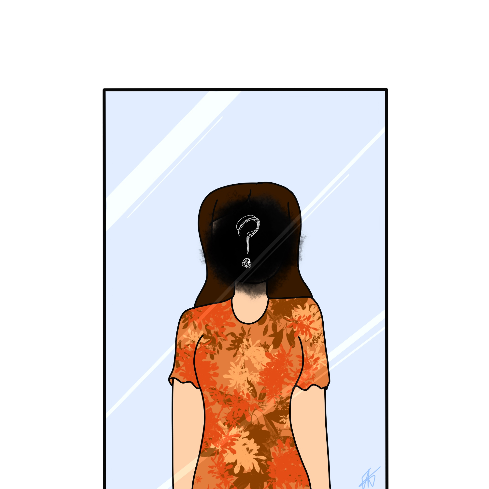

Los trastornos psiquiátricos se caracterizan por un deterioro cognitivo clínicamente significativo, regulación emocional o comportamiento.
TDAH
Que es TDAH? El Trastorno por Déficit de Atención con Hiperactividad o TDAH es un trastorno que hace que no pienses antes de actuar. El mayor problema para algunas personas con TDAH es la concentración, pero puede afectar otras habilidades, como el control emocional.

Cuales son los sintomas? Una persona con TDAH puede tener estos sintomas:
Dificultad para mantener la atención
Problemas de memoria
Impulsividad es decir que la persona actúa sin antes pensar en las consecuencias como interrumpir conversaciones.
Se les dificulta asumir las responsabilidades como las de el trabajo o escuela
Hiperconcentración una persona con TDAH se le dificulta concentrarse pero cuando lo logran omiten todo a su alrededor es decir se concentran tanto que pierden la noción del tiempo e inconscientemente ignoran su entorno.
Trastorno de Alimentación
¿Qué es Trastorno de Alimentación? Los trastornos alimentarios son una enfermedad grave de la salud mental.Implican problemas serios sobre cómo se piensa de la comida y la conducta alimentaria.Esto implica que se coma más o menos de lo necesario. Los trastornos alimentarios son condiciones médicas. No son un estilo de vida.Esto afecta la capacidad del cuerpo para absorber suficientes nutrientes. Esto puede provocar problemas de salud como enfermedades cardiacas y renales o incluso la muerte.Pero hay tratamientos que pueden ayudar.

¿Cuáles son los síntomas de los trastornos alimentarios? Los síntomas de los trastornos alimentarios varían, dependiendo del trastorno.
Los síntomas de atracones de comida son:
Comer incluso cuando está lleno o no tiene hambre
Comer rapido durante un episodio de atracon
Comer solo en secreto para evitar la vergüenza
Los síntomas de la bulimia nerviosa son los mismo que los atracones,además de tratar de deshacerse de la comida el peso después:
Provocarse el vómito o usar laxantes o enemas para acelerar el tránsito de los alimentos por el cuerpo
Hacer ejercicio intenso y excesivo
Ayuno
Los síntomas de la anorexia nerviosa son:
Comer muy poco, hasta el extremo de morir de hambre
Ejercicio intenso y excesivo
Delgadez extrema
Miedo intenso a aumentar de peso
Imagen corporal distorsionada:Verse con sobrepeso incluso cuando tiene un peso extremadamente bajo
Trastorno de Bipolaridad
¿Qué es Bipolaridad? El trastorno bipolar es una enfermedad mental que causa cambios extremos en el estado de ánimo que comprenden altos emocionales y bajos emocionales. Los episodios de cambios en el estado de ánimo pueden ocurrir en raras ocasiones o muchas veces por un ano. Aunque la mayoría de las personas presentan síntomas emocionales entre los episodios,es posible que algunas no presenten ninguno.

¿Cuáles son los síntomas del trastorno bipolar? Los síntomas más habituales son:
Episodios maníacos con euforia o irritabilidad, ideas de grandiosidad, aceleración del habla, hiperactividad, etc.
Episodio depresivo con retardo psicomotor y/o hipersomnia, alteración del estado de ánimo, etc.
Trastorno de Esquizofrenia
¿Qué es la esquizofrenia? La esquizofrenia es un trastorno mental grave por el cual las personas interpretan la realidad de manera anormal.La esquizofrenia puede provocar una combinación de alucinaciones, delirios y trastornos graves en el funcionamiento diario y puede ser incapacitante.

¿Cuáles son los síntomas de la esquizofrenia? Entre los síntomas se pueden incluir los siguientes:
Fantasías.Son creencias falsas que no tienen base en la realidad.Entre ellas, piensan que están siendo perseguidos;piensan que ciertos comportamientos o gestos son por ellos;tienen una habilidad o fama excepcionales; o está a punto de ocurrir una catástrofe.
Alucinaciones. Por lo general implica ver o escuchar cosas que no existen. Pero para una persona con esquizofrenia es como si de verdad estuviera pasando.Las alucinaciones son variadas pero la más común es escuchar voces.
Pensamiento desorganizado. El pensamiento desorganizado se infiere a partir del habla desorganizada.La comunicación se puede ver afectada y las respuestas a preguntas pueden no relacionarse con estas de manera parcial o completa. En raras ocasiones,el habla puede incluir el agrupamiento de palabras sin sentido, lo cual suele conocerse como ensalada de palabras.
Comportamiento muy errático o inusual. Esto puede manifestarse de diversas formas, desde la estupidez infantil hasta protestas no planificadas. El comportamiento no está orientado a objetivos, por lo que es difícil completar las tareas. Los comportamientos pueden incluir negarse a seguir instrucciones, comportamiento inconsistente o vergonzoso, falta de respuesta o movimientos ineficaces o excesivos.
Síntomas negativos.Esto se refiere a la falta de capacidad para vivir de manera normal.Por ejemplo, la persona puede descuidar su higiene o parecer que carece de emociones.Además, la persona puede perder el interés en hacer actividades de todos los días, retraerse socialmente o carecer de la capacidad de experimentar placer.
Con el pasar del tiempo los síntomas cambian con respecto al tipo y la gravedad, con periodos de empeoramiento y remisión de los síntomas. Algunos síntomas pueden estar siempre presentes.
Trastorno obsesivo-compulsivo
Que es el Trastorno obsesivo-compulsivo? El Trastorno obsesivo-compulsivo(TOC) es un trastorno mental en el cual las personas tienen pensamientos,sentimientos,ideas,sensaciones y comportamientos repetitivos que los impulsan a hacer algo una y otra vez.

¿Cuáles son los síntomas del trastorno obsesivo-compulsivo? Las personas con TOC pueden tener síntomas de obsesiones, compulsiones o ambos: Las obsesiones son pensamientos, impulsos o imágenes mentales que se repiten y causan ansiedad. Pueden involucrar cosas como:
Miedo a los germenes o a la contaminacion
Miedo a perder o extraviar algo
Preocupaciones por perjuicios que le puedan afectar a usted o a otros
Pensamientos agresivos hacia usted u otros
Necesitar que algunas cosas esten alineadas en forma exacta o dispuestas de una manera particular precisa
Las compulsiones son comportamientos que usted siente que debe hacer una y otra vez para tratar de reducir su ansiedad o detener los pensamientos obsesivos. Algunas compulsiones comunes incluyen:
Limpieza y/o lavado de manos excesivo
Verificar repetidamente cosas, como si la puerta esta cerrada o el horno apagado
Contar compulsivamente
Ordenar y organizar las cosas de una manera particular y precisa
Trastorno de Depresion
Que es la Depresion? La depresión es un trastorno emocional que causa un sentimiento de tristeza constantes y una pérdida de interés en realizar actividades.La depresión afecta los sentimientos,los pensamientos y comportamiento de una persona, y puede provocar problemas físicos y emocionales. Es posible que tengas dificultades para realizar las actividades cotidianas y que, a veces, sienta que no vale la pena vivir.
Cuales son los sintomas de la depresion? Los sintomas se producen durante gran parte del dia, casi todos los dias y pueden consistir en:
Sentimientos de tristeza, ganas de llorar, vacio o desesperanza
Arrebatos de enojo, irritabilidad o frustración, incluso por asuntos de poca importancia
Pérdida de interés o placer por la mayoría de las actividades habituales o todas, como las relaciones sexuales, los pasatiempos o los deportes
Alteraciones del sueño, como insomnio o dormir demasiado
Cansancio y falta de energía, por lo que incluso las tareas pequeñas requieren un esfuerzo mayor
Falta de apetito y adelgazamiento, o más antojos de comida y aumento de peso
Ansiedad, agitación o inquietud
Lentitud para razonar, hablar y hacer movimientos corporales
Sentimientos de inutilidad o culpa, fijación en fracasos del pasado o autorreproches
Dificultad para pensar, concentrarse, tomar decisiones y recordar cosas
Pensamientos frecuentes o recurrentes sobre la muerte, pensamientos suicidas, intentos suicidas o suicidio
Problemas físicos inexplicables, como dolor de espalda o de cabeza
Para la mayoría de personas con depresión, los síntomas pueden ser bastante notorios para causar problemas en las actividades cotidianas, como el trabajo,escuela, las actividades sociales o las relaciones con otras personas.Algunas personas pueden sentirse infelices o tristes en general sin saber realmente porqué
Trastorno de Ansiedad
Que es el trastorno de ansiedad? A veces las preocupaciones de la vida son normales. Sin embargo, las personas con trastornos de ansiedad a menudo experimentan ansiedad y preocupación por situaciones cotidianas. En los trastornos de ansiedad, a menudo hay momentos de sentimientos repentinos de ansiedad extrema y miedo o pánico que aumentan en unos pocos minutos.

Los signos y síntomas de la ansiedad más comunes incluyen los siguientes:
Sensación de nerviosismo, agitación o tensión
Sensación de peligro inminente, pánico o catástrofe
Aumento del ritmo cardíaco
Respiración acelerada
Sudoración
Temblores
Sensación de debilidad o cansancio
Problemas para concentrarse o para pensar en otra cosa que no sea la preocupación actual
Tener problemas para conciliar el sueño
Padecer problemas gastrointestinales
Tener dificultades para controlar las preocupaciones
Tener la necesidad de evitar las situaciones que generan ansiedad
Trastorno de personalidad
Que es el trastorno de la personalidad? El trastorno de personalidad es un tipo de enfermedad mental que se caracteriza por patrones marcados y negativos de pensamiento y conducta. Una persona con un trastorno de personalidad tiene dificultad para entender y relacionarse con situaciones y personas. Esto provoca importantes problemas y limitaciones en las relaciones, las actividades sociales, el trabajo y la escuela.

Sintomas del Trastorno de personalidad Los tipos de trastornos de la personalidad se dividen en tres grupos en función de las mismas características y síntomas. Muchas personas que tienen una enfermedad crónica tienen signos y síntomas de otra enfermedad. No todos los síntomas enumerados son necesarios para diagnosticar la enfermedad.
Una persona con trastorno de personalidad antisocial puede:
Ser capaz de actuar jovial y encantador
Ser buena para adular y manipular las emociones de otras personas
Quebrantar la ley constante
Descuidar su propia seguridad y la de los demás
Tener problemas de consumo de drogas
Mentir, robar y pelear con frecuencia
No mostrar culpa ni remordimiento
Estar a menudo enojado o ser arrogante
Una persona con el trastorno de la personalidad por evitación puede:
Ser fácilmente lastimada cuando la gente la crítica o la desaprueba
Refrenarse demasiado en las relaciones íntimas
Resistirse a involucrarse con la gente
Evitar actividades o trabajos que impliquen contacto con los demás
Ser tímida en situaciones sociales por miedo de hacer algo mal
Hacer que las dificultades potenciales parezcan peores de lo son
Mantener el punto de vista de que no son buenas socialmente
Las personas con TLP (Trastorno de la personalidad) se sienten inseguras sobre cómo se ven a sí mismas y cómo las juzgan los demás. Como resultado, sus intereses y valores pueden cambiar rápidamente. Pueden ver las situaciones en términos críticos, buenos o malos. Lo que sientes por otras personas puede cambiar rápidamente. Una persona que parece hermosa un día puede ser despreciable. Estas emociones que cambian rápidamente a menudo conducen a relaciones inestables o inestables.
Otros síntomas para el TLP:
Miedo intenso de ser abandonado
Intolerancia a la soledad
Sentimientos de vacío y aburrimiento
Manifestaciones de ira inapropiada
Impulsividad, como con el consumo de sustancias o las relaciones sexuales
Actos de autolesión, como hacerse cortes en las muñecas o tomar sobredosis
Por que?
Porque este tema para la webside?
Escogi este tema para la wedside porque hay muchas personas no solo en mi comunidad si no en el mundo que no saben de los trastornos mentales. Tambien hay personas como yo que se cuestionan muchas cosas que hacen sin saber que es un posible trastorno.Hace unos años me entere de que tengo TDAH eso me hizo sentir mas comoda conmigo misma ya que eso explicaba muchos conportamientos.